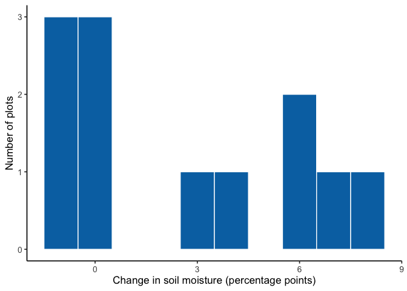
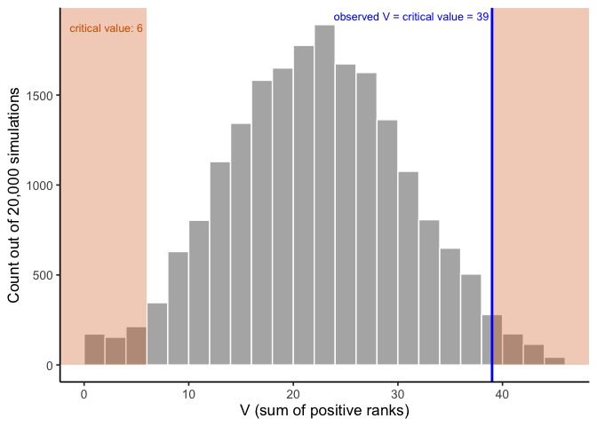
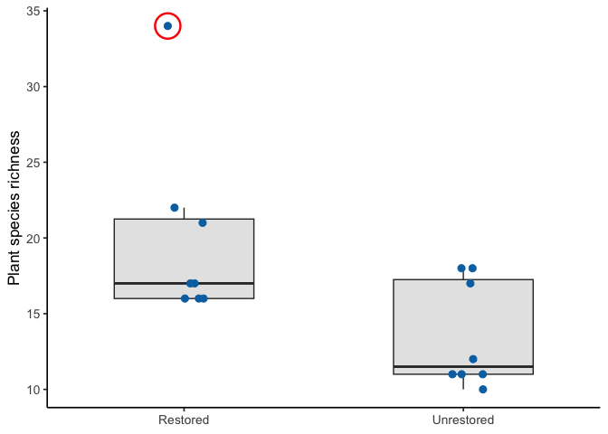
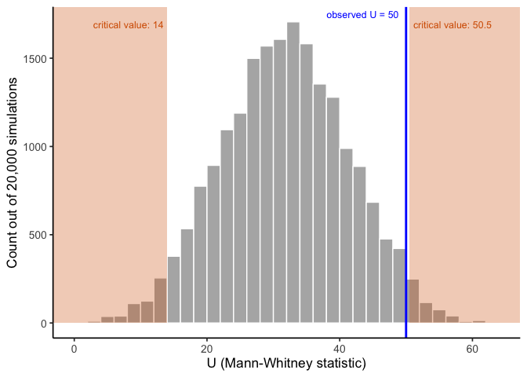
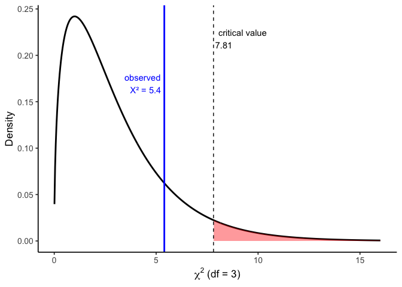

| Plot | Before | After | Difference |
|---|---|---|---|
| 1 | 20 | 26 | 6 |
| 2 | 15 | 21 | 6 |
| 3 | 22 | 21 | -1 |
| 4 | 18 | 22 | 4 |
| 5 | 16 | 23 | 7 |
| 6 | 24 | 23 | -1 |
| 7 | 19 | 18 | -1 |
| 8 | 14 | 22 | 8 |
| 9 | 21 | 21 | 0 |
| 10 | 17 | 17 | 0 |
| 11 | 25 | 25 | 0 |
| 12 | 20 | 23 | 3 |
7 When Assumptions Fail: Nonparametric and Categorical Data
7.1 Parametric vs. nonparametric tests
Chapter 6 covered three flavors of the \(t\)-test (one-sample, paired, and independent-samples, also called two-sample). All three need continuous, roughly normal data; the independent-samples test additionally assumes similar variance across the two groups. This chapter covers what to do when those assumptions aren’t met. We’ll also cover what to do if your data aren’t continuous at all.
So far, we’ve been looking at parametric tests, without calling them that. A test is parametric when we can only know the sampling distribution of its test statistic, the shape we compare our result against to get a \(p\)-value, because we assumed something specific about the shape of the population the data came from. For the \(t\)-test, that assumption is normality: the \(t\)-distribution isn’t the shape of your raw data, it’s the shape the \(t\)-statistic takes across repeated samples, and we can only derive that shape because we assumed the population itself was normal (or leaned on the Central Limit Theorem to get there for a large enough sample). Nonparametric tests, as you’ll see below, still end up with a known distribution for their own test statistics; they just don’t need to assume anything about the parent population’s shape to get there.
When the distributional assumptions are met, parametric tests are generally the most powerful available. However, when distributional assumptions are not met, parametric tests can become unreliable, and it may be difficult to understand how they become unreliable without extensive simulations. The worse the departures from assumed distributions, the worse the errors that may result.
Nonparametric tests make no assumption about the shape of the population’s distribution. Nonparametric does not mean assumption-free. But they usually have assumptions that are easier to satisfy than those of parametric tests.
Many nonparametric tests are run on the ranks of the data (first, second, third … last), rather than on the raw data. For example, the median - it’s a statistic based on ranks. It represents the middle rank in a data set.
We’ll talk about two different kinds of tools today:
Nonparametric alternatives (to t-tests). Your outcome is still continuous, but it’s skewed, has outliers, or your sample is too small to trust normality. The Wilcoxon signed-rank test and Mann-Whitney-Wilcoxon test answer the same questions as the one-sample/paired and independent-samples \(t\)-tests, respectively, without assuming normality.
Categorical data. Your outcome isn’t a number at all: a site either has an invasive species or it doesn’t, a sample either exceeds a threshold or it doesn’t. None of the tests above apply here; you need the chi-square (\(\chi^2\)) tests.
We’ll state the assumptions explicitly for each test as we go through them.
A practical bonus of rank-based tests: ordinal data. Because the Wilcoxon and Mann-Whitney-Wilcoxon tests only need a rank ordering, neither is limited to interval- or ratio-scale measurements the way a \(t\)-test is. A \(t\)-test needs a mean, which requires numbers where the distance between values means something. Plenty of environmental data doesn’t work that way: a water-quality rating (poor, fair, good, excellent), a disturbance-severity class, a Likert-style survey response. You can put those in order, but “the average disturbance class was 2.4” isn’t meaningful the way “the average pH was 6.8” is. These rank-based tests only need the ordering, which ordinal data already has, so they apply directly where a \(t\)-test can’t.
7.2 Nonparametric alternative to one-sample & paired t-test: the Wilcoxon signed-rank test
Chapter 6 built the paired \(t\)-test around this same idea, wetland restoration and soil moisture, with a full 20-plot dataset. Let’s run a smaller version of that same design, and this time actually check whether we should trust the result before reporting it.
Step 1: run the paired \(t\)-test, the way Chapter 6 taught it.
| Mean difference | t | df | p-value |
|---|---|---|---|
| 2.583333 | 2.57 | 11 | 0.026 |
\(t(11) = 2.57\), \(p = .026\). Significant! Restoration looks like it increased soil moisture.
Step 2: wait, did we check assumptions first? Let’s look at the differences before trusting that \(p\)-value.

| Statistic | p-value |
|---|---|
| 0.85 | 0.039 |
The Shapiro-Wilk test agrees with the picture: \(p=.039\), a real violation, not a hypothetical one. Three plots didn’t change at all, three dropped slightly, and the rest jumped up by quite a lot; that’s not symmetric, let alone normal. The \(t\)-test’s “significant” result was built on an assumption the data don’t meet. Time for the Wilcoxon signed-rank test.
The question: did soil moisture systematically change after restoration, or is any change we see just plot-to-plot noise?
\(H_0\): no systematic shift; the differences are symmetric around a median of 0 (positive and negative ranks are balanced).
\(H_A\): there is a systematic shift; the median difference is not 0.
How it works, conceptually. Instead of using the actual sizes of the differences, the test converts them to ranks: it ranks the absolute differences from smallest to largest, then checks whether the positive-signed ranks and negative-signed ranks are roughly balanced. Balanced ranks are the null case: it would mean a plot’s rank (how extreme its change was) has nothing to do with whether that change was an increase or a decrease. If soil moisture really increased at most plots, the larger ranks should belong mostly to positive differences instead. Because it works with ranks rather than raw values, one wildly extreme plot can’t dominate the result the way it could with a mean.
Its assumption. The Wilcoxon signed-rank test does not require normality, but it assumes the differences come from a symmetric distribution around their median. That’s a milder assumption than normality (symmetric-but-not-normal distributions are common), but our histogram above is pushing it: the positive side stretches to 8, the negative side barely reaches -1. We’ll run the test anyway, since it’s still the better-justified choice here, and note the strain honestly when we interpret the result.
| Statistic (V) | p-value | Method | Tails |
|---|---|---|---|
| 39 | 0.057 | Wilcoxon signed rank test with continuity correction | two.sided |
“Two.sided” in the Tails column just means we tested for a shift in either direction, the same one-vs-two-tailed distinction from Chapter 6.
R falls back to a normal approximation twice over here: once for the tied differences (two plots at \(+6\), three at \(-1\)), and once because three plots showed no change at all. Zero differences can’t be ranked as positive or negative, so the Wilcoxon test quietly drops them and runs on the remaining 9 plots instead of all 12. That’s worth thinking about: the rank test isn’t just less sensitive to magnitude than the \(t\)-test, it can end up with less data entirely.
How \(V\) is actually calculated. Drop the zero differences, take the absolute value of what’s left, rank those absolute values from smallest to largest (tied absolute values share the average of their ranks), then sum the ranks belonging to the positive differences. That sum is \(V\).
| Difference | Abs. difference | Rank | Sign |
|---|---|---|---|
| 6 | 6 | 6.5 | + |
| 6 | 6 | 6.5 | + |
| -1 | 1 | 2.0 | - |
| 4 | 4 | 5.0 | + |
| 7 | 7 | 8.0 | + |
| -1 | 1 | 2.0 | - |
| -1 | 1 | 2.0 | - |
| 8 | 8 | 9.0 | + |
| 3 | 3 | 4.0 | + |
\(V\) is the sum of the ranks where Sign is “+”: \(6.5+6.5+5+8+9+4 = 39\), matching the table R gave us above.
How the reference distribution is actually built. Under \(H_0\), each plot’s rank has an independent 50/50 chance of ending up positive or negative, purely by chance. That gives you \(2^n\) equally likely sign patterns for \(n\) nonzero differences (here, \(n=9\), not 12, since the zeros already dropped out), and summing the positive ranks for every one of those patterns builds a discrete probability distribution, not just a raw count. It has a known mean and variance:
\[E[V] = \frac{n(n+1)}{4}, \qquad \text{Var}(V) = \frac{n(n+1)(2n+1)}{24}\]
Plugging in our \(n=9\) nonzero plots:
\[E[V] = \frac{9 \times 10}{4} = 22.5, \qquad \text{Var}(V) = \frac{9 \times 10 \times 19}{24} = 71.25\]
That’s an SD of about 8.4. Our observed \(V=39\) sits about 1.96 SDs above that expectation (\(\frac{39-22.5}{8.4} \approx 1.96\)), which is where R’s \(p=.057\) comes from: a normal approximation to this exact distribution (with a ties and zeros adjustment). For small, tie-free samples with no zeros, R can instead read the exact enumerated distribution directly.
Where do the critical values actually come from? The same place they always do in this book: we build the null distribution ourselves, by simulating 20,000 experiments where each of the 9 nonzero ranks independently gets a random \(+\) or \(-\) sign, exactly what \(H_0\) says should happen, and adding up the positive ranks each time.

Our observed \(V=39\) isn’t just close to the critical value; it is the critical value, 39, the exact boundary where the two-tailed 5% rejection region begins. That’s why \(p=.057\) sits so close to \(\alpha=.05\) without crossing it. Not significant, but only barely.
So far: \(t\)-test \(p=.026\) (significant), Wilcoxon \(p=.057\) (not quite). Same 12 plots, two different verdicts, because the \(t\)-test’s numerator and denominator both used the exact magnitudes the Wilcoxon test deliberately ignores.
The sign test. There’s an even simpler nonparametric option, the sign test, which looks only at whether each difference is positive or negative. It discards the magnitude entirely and asks whether pluses outnumber minuses more than chance would suggest. It has essentially no distributional assumption beyond the universal one (independence of observations, from a sound study design; see Chapter 6), not even symmetry. That’s genuinely useful here: we already flagged the symmetry assumption as shaky for this data (the positive side stretching to 8, the negative side barely reaching -1), so the sign test sidesteps the one assumption the Wilcoxon test still needed. That robustness comes at a big cost in power, though, so it’s usually a last resort.
| Plots increased | Plots total | p-value |
|---|---|---|
| 6 | 9 | 0.508 |
Six of the 9 nonzero plots increased. \(p=.508\): nowhere close to significant.
The full picture. \(t\)-test: \(p=.026\), significant. Wilcoxon signed-rank: \(p=.057\), not quite. Sign test: \(p=.508\), not close. Same 12 plots, three tests, three different verdicts. Each test gives up a little more than the last one, the \(t\)-test uses the full magnitude of every difference, Wilcoxon keeps the ranks but drops the zeros, and the sign test keeps only direction, and the weaker the information, the weaker the evidence.
That’s not an argument that nonparametric tests are worse. The \(t\)-test’s answer looked strongest here specifically because it leaned hardest on the assumption that turned out not to hold. Check your assumptions before you report a \(p\)-value, not after you’ve already seen one you like.
7.3 Nonparametric alternative to the independent-samples t-test: the Mann-Whitney-Wilcoxon test
Now let’s run through the same kind of example for the independent-samples case. Researchers surveyed plant species richness (the number of distinct plant species found) at 8 restored wetland plots and 8 unrestored reference plots, to see whether restoration increased plant diversity.
| Plot | Restored | Unrestored |
|---|---|---|
| 1 | 21 | 17 |
| 2 | 16 | 18 |
| 3 | 22 | 18 |
| 4 | 16 | 12 |
| 5 | 17 | 11 |
| 6 | 16 | 11 |
| 7 | 17 | 11 |
| 8 | 34 | 10 |
Step 1: run the \(t\)-test, the way Chapter 6 taught it.
| Mean difference | t | df | p-value |
|---|---|---|---|
| 6.375 | 2.54 | 14 | 0.024 |
\(t(14) = 2.54\), \(p = .024\). Significant! Restoration looks like it increased richness.
Step 2: wait, did we check assumptions first? We didn’t, and Chapter 6 was explicit that you’re supposed to. Let’s actually look at the data before trusting that \(p\)-value.

The circled plot has 34 species, nearly double any other plot in either group. We don’t just throw away outliers; maybe that plot sits in an unusually favorable microhabitat. Either way, it’s a real violation of the normality assumption, not a hypothetical one:
| Group | Statistic | p-value |
|---|---|---|
| Restored | 0.70 | 0.002 |
| Unrestored | 0.77 | 0.015 |
Both groups fail the Shapiro-Wilk test, the restored group badly (\(p=.002\)), driven almost entirely by that one plot. The \(t\)-test’s “significant” result was built on top of an assumption the data don’t actually meet. This is exactly the situation the Mann-Whitney-Wilcoxon test was built for.
The question: did restoration increase plant species richness, or is the difference we see consistent with random plot-to-plot variation?
\(H_0\): no difference in richness between restored and unrestored plots; ranks are well-mixed between the groups.
\(H_A\): richness tends to rank systematically higher in one group than the other.
How it works, conceptually. Pool all the observations from both groups together, rank them from smallest to largest, then compare the sum of ranks in Group A to the sum of ranks in Group B. If the groups truly don’t differ, ranks should be well mixed between them; if one group tends to have higher values, its ranks should be systematically higher too. Critically, that outlier plot still gets a rank, but only one rank, the highest one, no matter how far above the pack it sits. Its magnitude, which is what distorted the \(t\)-test, can’t distort the Mann-Whitney-Wilcoxon test the same way.
Its assumption. The Mann-Whitney-Wilcoxon test assumes both groups’ parent distributions have the same shape: it does not require normality, and the assumption is not “equal variance,” even though same-shape distributions happen to have equal variance as a side effect. If the two groups have differently-shaped distributions (say, one skewed and one symmetric), the test still runs, but interpreting a significant result purely as “the medians differ” becomes murkier, since it could be a difference in location, shape, or both. Our two groups are both right-skewed by roughly the same amount, so that’s a reasonable assumption here.
| Statistic (U) | p-value | Method | Tails |
|---|---|---|---|
| 50 | 0.063 | Wilcoxon rank sum test with continuity correction | two.sided |
R falls back to the normal approximation again, because both groups share some tied richness values (two plots at 16, two at 11, and so on).
How the reference distribution is actually built. Same idea as the Wilcoxon signed-rank case above, just built from group membership instead of signs. Under \(H_0\), both groups are draws from the same population, so once you pool and rank all \(N = n_A + n_B = 16\) values, which ranks end up in the restored group is just a matter of chance: any of the \(\binom{16}{8}\) ways of splitting those 16 ranks into two groups of 8 is equally likely. That’s a real, discrete probability distribution, and its mean and variance are known:
\[E[U] = \frac{n_A n_B}{2}, \qquad \text{Var}(U) = \frac{n_A n_B (n_A+n_B+1)}{12}\]
Plugging in our two groups of 8:
\[E[U] = \frac{8 \times 8}{2} = 32, \qquad \text{Var}(U) = \frac{8 \times 8 \times 17}{12} \approx 90.7\]
That’s an SD of about 9.5. Our observed \(U=50\) sits about 1.9 SDs above that expectation (\(\frac{50-32}{9.5} \approx 1.9\)), which is where R’s \(p=.063\) comes from: a normal approximation to this exact distribution (with a small ties adjustment), same mechanism as the Wilcoxon case. For small samples without ties, R can instead read the exact permutation distribution directly, no approximation needed.
Same question as before: where do the critical values come from? We build them the same way, by simulation. Under \(H_0\), group membership is random with respect to rank, so we pool the richness values, then repeatedly shuffle which 8 ranks land in the restored group:

Our observed \(U=50\) lands just inside the critical value of \(50.5\), matching R’s \(p=.063\): close to significant, but not quite.
The full picture. The \(t\)-test said \(p=.024\): significant, restoration works. The Mann-Whitney-Wilcoxon test on the exact same data says \(p=.063\): not significant at \(\alpha=.05\), right on the boundary. Same 16 plots, same question, two different answers. One outlier plot was doing a lot of the work behind that “significant” \(t\)-test result, and that’s exactly the kind of influence the normality assumption is supposed to rule out. That’s not a reason to always prefer the nonparametric test; if the data really had been roughly normal, the \(t\)-test’s extra power would have been the right tool. It’s why you check assumptions before reporting a \(p\)-value, not after.
7.4 Categorical data: the chi-square tests
Every test so far (the \(t\)-tests in Chapter 6, and the Wilcoxon and Mann-Whitney-Wilcoxon tests above) needs a continuous outcome variable. But a lot of environmental data isn’t continuous at all: a site either has an invasive species or it doesn’t; a stream sample either exceeds a safety threshold or it doesn’t; a plot falls into one land-cover category, not a number line. For categorical data, none of the tests above apply: you need a different tool entirely, the chi-square (\(\chi^2\)) test.
Chapter 3 introduced the shape of the chi-square distribution: always non-negative, right-skewed, naturally one-tailed, with its exact shape depending on degrees of freedom. Here’s what that rejection region looks like in practice, using the goodness-of-fit example below (one of the two chi-square tests you’ll meet in this section; more on what “goodness-of-fit” means right before we run it), which has \(df = 3\). The critical value at \(\alpha = .05\) is 7.81; any statistic beyond that point (the shaded region) occurs less than 5% of the time by chance.
If you’re wondering how a “nonparametric” test can still have its own named distribution, that’s worth clearing up. “Nonparametric” is an assumption about your data, not the test statistic: you don’t need to assume the data came from a specific family like the normal distribution. Every test still needs a known reference distribution for its test statistic to produce a \(p\)-value; what differs is how that reference distribution gets built. The chi-square distribution here, like the Wilcoxon and Mann-Whitney-Wilcoxon distributions earlier in this chapter, is built without any assumption about the data’s shape: chi-square from squared deviations under \(H_0\), the rank tests from all possible rank arrangements. That’s what “distribution-free” actually means: the statistic’s distribution is known, but building it never required assuming anything about the data.

There are two versions of the chi-square test, depending on the question you’re asking.
7.4.1 Chi-square goodness-of-fit: does one categorical variable match an expected pattern?
The name comes straight from what the test does: it checks how well (“goodness”) your observed counts match (“fit”) a specific pattern you’d expect, whether that expectation comes from a historical baseline, a theory, or an assumption of “equally likely.” A small chi-square statistic means a good fit (observed counts close to expected); a large one means a poor fit (observed counts far from expected).
A state wildlife agency has historically found fish evenly distributed across four zones of a lake: 25% of fish in each zone. This year’s survey of 200 fish gives a different picture:
| Zone | Observed |
|---|---|
| A | 38 |
| B | 61 |
| C | 52 |
| D | 49 |
The question: does this year’s distribution across zones differ from the historical 25%-each pattern, or is this the kind of unevenness you’d expect from random sampling alone?
\(H_0\): fish are still distributed 25% per zone; the pattern matches the historical baseline.
\(H_A\): fish are not evenly distributed across zones; the pattern has changed.
| Statistic (χ²) | df | p-value | Method |
|---|---|---|---|
| 5.4 | 3 | 0.145 | Chi-squared test for given probabilities |
Assumption. The goodness-of-fit test doesn’t assume anything about the shape of your data (categories aren’t numbers, so there’s no shape to assume). It does have a practical requirement instead: expected counts should generally be 5 or more in each category. That “5” is a conventional rule of thumb, not something calculated from this data or compared to a critical value; it’s a check on whether the chi-square curve is a trustworthy approximation, done before the test itself runs. Here, expected count per zone is \(200 \times 0.25 = 50\) (total fish times the 25%-per-zone expectation under \(H_0\)), comfortably above that minimum. When expected counts are too small, the chi-square approximation breaks down and a different method (like Fisher’s exact test) is more appropriate.
Where \(\chi^2\) actually comes from. For each category, take the squared difference between observed and expected, scaled by expected: \(\chi^2 = \sum \frac{(O-E)^2}{E}\).
| Zone | Observed | Expected | Contribution |
|---|---|---|---|
| A | 38 | 50 | 2.88 |
| B | 61 | 50 | 2.42 |
| C | 52 | 50 | 0.08 |
| D | 49 | 50 | 0.02 |
Summing the last column: \(2.88+2.42+0.08+0.02 = 5.4\), matching R’s statistic above. With \(df=3\), the critical value at \(\alpha=.05\) is 7.81 (the same one marked on the distribution figure earlier in this chapter); our \(5.4\) falls well short of it.
Interpretation. \(\chi^2(3) = 5.4\), \(p = .145\): not significant. This year’s zone counts are consistent with the historical 25%-each pattern; the unevenness we see is within the range chance alone would produce.
7.5 Chapter Summary
Why it matters. Real environmental data often breaks the rules a \(t\)-test needs: small samples, skewed distributions, or outcomes that are counts and categories rather than measurements. This chapter is the toolkit for those cases, and for recognizing when you are in one.
Core ideas
- Rank-based tests trade power for weaker assumptions. The Wilcoxon signed-rank and Mann-Whitney-Wilcoxon tests ask the same questions as the paired and independent-samples \(t\)-tests, but work from ranks instead of raw magnitudes. That buys a milder distributional assumption at the cost of some sensitivity.
- The trade-off is a spectrum. The sign test goes further still, using only the direction of each difference. On the same restoration data, the \(t\)-test, Wilcoxon, and sign test gave progressively weaker verdicts, because each one throws away more information than the last.
- Nonparametric does not mean assumption-free. Wilcoxon assumes the differences are symmetric about their median. Mann-Whitney-Wilcoxon assumes the two distributions have the same shape, which is not the same as equal variance. State the assumption you are actually making.
- Check assumptions before you trust a \(p\)-value, not after. Both worked examples in this chapter ran the parametric test first, then went back and found the violation. That order is deliberate, because it is the mistake most people actually make.
- Categorical data needs a different tool entirely. The chi-square tests handle counts: goodness-of-fit asks whether one variable’s counts match an expected pattern, and the test of independence asks whether two categorical variables are related.
- The testing logic never changes. State \(H_0\) and \(H_A\), compute a statistic, and ask how surprising that statistic would be if \(H_0\) were true. Only the statistic and its reference distribution differ from test to test.
Barnes, Mallory L. 2023. Statistics for Environmental Science.